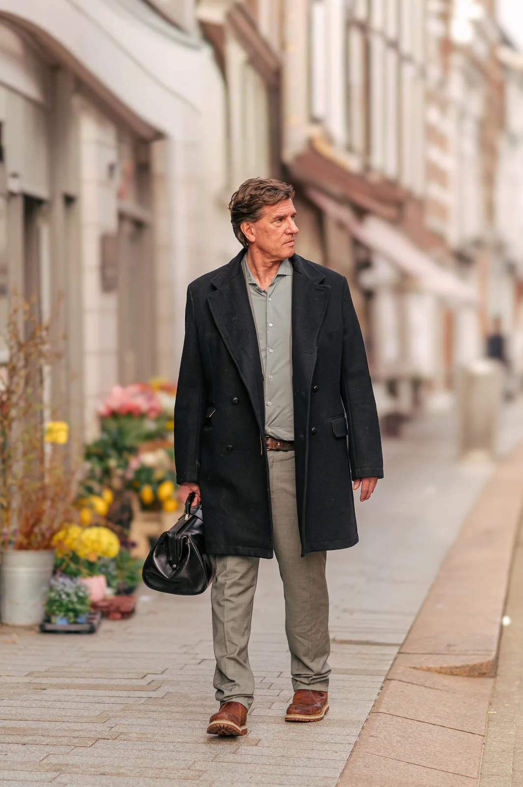
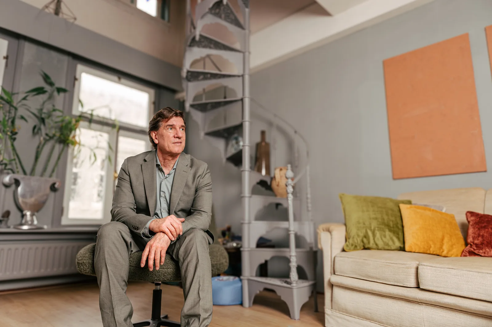
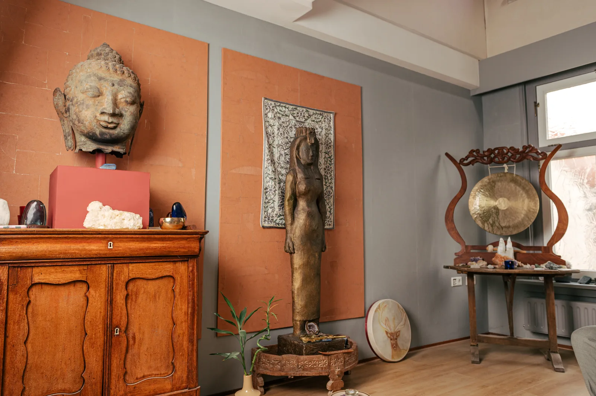
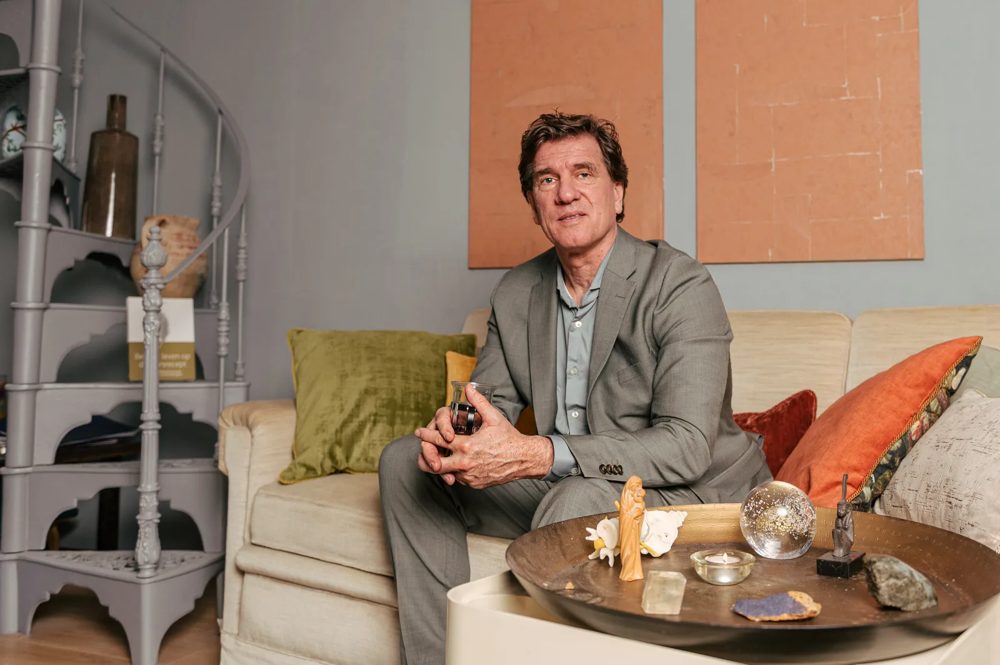

Ik bied twee persoonlijke trajecten en een groepstraining aan. Elk traject begint met een consult waarin we samen kijken wat bij jou past.
Een persoonlijk traject voor herstel en innerlijke beweging

Voel je dat je ergens vastzit, maar krijg je er geen grip op?
Veel mensen blijven rondlopen met patronen die energie kosten. Ze begrijpen vaak wel dát er iets speelt, maar niet waar het vandaan komt of hoe ze het kunnen doorbreken.
In dit traject neem je bewust de tijd om te vertragen en te verdiepen. We onderzoeken samen waar jouw energie vastloopt, welke patronen daaronder liggen en wat daarin gezien en gevoeld wil worden. Vaak ligt er oude, onverwerkte pijn onder die nog steeds doorwerkt. Door daar met aandacht naartoe te gaan, ontstaat er beweging. Wat vastzat, mag weer stromen.
Voor wie voelt dat er meer mogelijk is, maar merkt dat iets blokkeert. Voor wie bereid is eerlijk naar binnen te kijken en verantwoordelijkheid te nemen voor verandering.
Leer je eigen systeem begrijpen, verdiepen en toepassen, voor jezelf én in je werk met anderen

Voel je dat er meer in je zit, maar weet je niet hoe je daar bij komt?
De meeste mensen proberen hun leven te begrijpen met hun hoofd. Maar jouw lichaam en energie vertellen een veel eerlijker verhaal. In dit traject leer je die signalen herkennen en begrijpen: waar je energie vastloopt, welke patronen daaronder liggen en wat er nodig is om weer in beweging te komen. Deze kennis is concreet, voelbaar en direct toepasbaar in je dagelijks leven.
Voor wie bereid is naar binnen te kijken, met openheid en nieuwsgierigheid. En voor wie verdieping zoekt, in zichzelf en eventueel in het werken met anderen.
Verdiepend traject in lichaamsbewustzijn en energetisch werk, voor jezelf én voor je werk met cliënten

Soms voel je dat er méér in je zit: je functioneert wel, maar je leeft niet volledig vanuit wie je werkelijk bent. De groepstraining is een verdiepend traject waarin je aan je eigen ontwikkeling werkt én leert hoe je op een diepere laag kunt waarnemen in je werk met anderen.
Voor mensen die verdieping zoeken in zichzelf. En voor professionals die met mensen werken en hun waarneming willen verdiepen.
In een consult staan we stil bij wat er werkelijk in jou leeft. Wat vraagt aandacht? Waar wil jouw ziel naartoe bewegen? Jij staat centraal. Ik stem mij af op wie jij bent, en werk op een praktisch-spirituele manier waarbij ik mede gebruik maak van mijn ervaringen en kennis van o.a. westerse geneeskunde, ayurveda, acupunctuur en mindfulness.
Het consult nodigt je uit om weer in verbinding te komen met je essentie, met je bezieling. Je krijgt inzicht, richting en praktische handvatten om jouw weg verder te bewandelen. We werken via het lichaam en je energie.
Daarbij is er veel aandacht voor jouw lichaamsbesef, aarding en energie, waaronder het chakra- en aurasysteem. We maken hierbij gebruik van eenvoudige energetische oefeningen die je concreet kunt toepassen in je dagelijks leven.
Soms dragen we oude patronen, beperkende overtuigingen, angsten en emoties met ons mee, die ons beperken om vrijuit te leven. Samen onderzoeken we wat nog klopt en wat losgelaten mag worden. We kijken hierbij naar invloeden vanuit je vroege jeugd in dit leven, en wanneer dat zich aandient ook naar diepere lagen en aansturende patronen die je ziel meedraagt vanuit vorige levens.
Zo kan er ruimte ontstaan voor zachtheid, eigenwaarde, veiligheid en zelfliefde. Kwaliteiten die van nature in jou aanwezig zijn.
